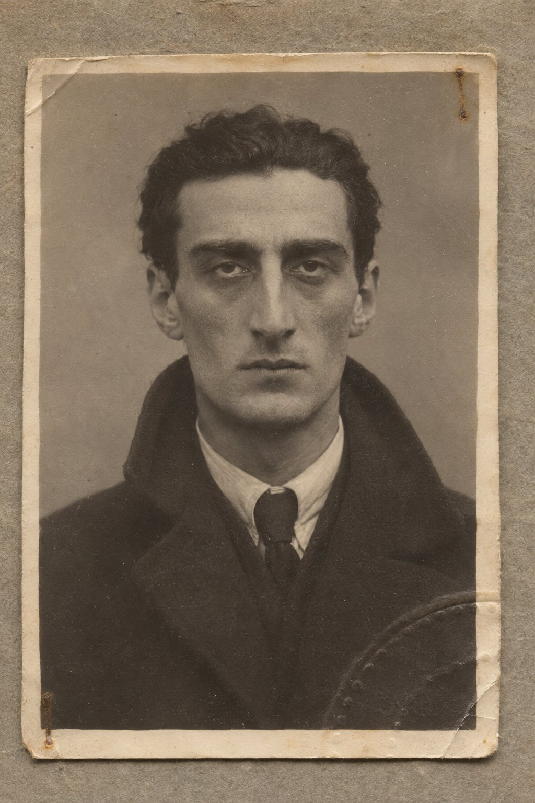

Феска

«Тюрбе (гробницы) открывают таким же образом; на чай дают, смотря по их значению, 1–5 пиастров. Саркофаги в них покрыты коврами и вышивками; тюрбан или феска обозначают место упокоения мужчины».
Бедекер, «Константинополь и Малая Азия. Путеводитель», Лейпциг, 1905. «Константинополь, практические замечания», с. 76–77.
Котэ проснулся оттого, что в комнате больше не горела свеча.
Было серо. Свет шёл не от стола, а от окна, ровный, мутный, без теней, и Котэ не сразу понял, что это утро. Он лежал на спине, в пальто, застёгнутом до горла, и вторая пуговица сверху давила ему под подбородок так же, как давила всю ночь. Он не помнил, когда заснул. Он помнил тень от распятия на потолке и колокол внизу, один удар, а потом ничего.
Нестор сидел у стола.
Он сидел так же, как сидел ночью, в пальто и в шарфе, и руки его лежали на коленях. В подсвечнике стоял огарок второй свечи, оплывший, с чёрным загнутым фитилём, а первая так и осталась на блюдце, утонувшая в воске. Учитель смотрел не на огарки, а в окно, туда, где над Золотым Рогом лежала дымка, и Котэ видел его лицо сбоку, серое, с запавшими щеками. Он подумал, что за одну ночь учитель постарел больше, чем за всю неделю.
— Вы не ложились, — сказал Котэ.
— Нет.
Котэ сел на кровати. Полы пальто, мокрые с ночи, высохли и стали жёсткими, как картон. Ботинок, в который в переулке плеснула вода из канавы, тоже высох и тянул ногу.
— Который час? — спросил Нестор.
— Не знаю. Рано.
— Рано, — согласился учитель. Он снял очки, посмотрел на них и не стал протирать. — Приходил отец Мартин. Затемно. Взял нашу бумагу.
— Зачем?
— Для австрийцев. Он сказал, что монаха австрийцы ни о чём не спрашивают. — Нестор надел очки. — До этого к калитке кто-то приходил. Я слышал голоса.
— Кто?
— Я не спросил.
Котэ посмотрел на него. Учитель сидел прямо, насколько вообще умел сидеть прямо, и смотрел в окно, и Котэ понял, что больше ничего не услышит. Он подумал, что вчера ночью учитель сказал ему «никогда» и что это слово, наверное, касается не только рассказов, но и вопросов. Учитель не спрашивал. Значит, и Котэ не должен был спрашивать.
Он встал, умылся над тазом холодной водой, которую никто не сменил с вечера, и пригладил волосы мокрыми руками. В зеркале над тазом было его лицо, небритое, с тёмными кругами под глазами, и Котэ отвернулся от него, как отворачиваются от знакомого на улице, с которым не хочется здороваться.
— Я спущусь вниз, — сказал он.
— Спустись, — сказал Нестор и не повернул головы.
---
На кухне было тепло, и пахло хлебом.
Отец Георгий стоял у плиты и мешал что-то в котле длинной деревянной ложкой, сопя. Нико сидел на табурете у стола, в рубашке, засучив рукава, и перед ним стояла кружка, полная, нетронутая, и уже не дымилась. Американское пальто висело на гвозде у двери, застёгнутое на все пуговицы. Когда Котэ вошёл, Нико поднял голову и сразу встал, и табурет под ним качнулся и стукнул о пол.
— Батоно Котэ.
— Сиди.
Нико не сел. Он стоял у стола и смотрел на Котэ так, как смотрят на человека, который вернулся откуда-то, куда тебя не взяли, и Котэ увидел, что мальчишка тоже не спал. Глаза у него были красные, а волосы с одной стороны примяты, будто он полночи пролежал на одном боку и смотрел в стену.
— Отец Георгий сказал, что меня отпустили, — сказал Нико. — Это правда?
Котэ посмотрел на отца Георгия. Монах мешал в котле и не оборачивался.
— Правда, — сказал Котэ. — Тебя отпустили.
— Совсем?
— Совсем.
Нико сел. Он сел так, будто у него подломились ноги, и взял кружку обеими руками, и не стал пить. Котэ видел, как он держит кружку, красными пальцами с обкусанными ногтями, теми самыми, которые вчера при лампе пришивали ему пуговицу на ножку.
— Утром приходил Гедеван, — сказал Нико в кружку. — Ещё темно было. Я мыл котёл, отец Георгий велел с вечера, а я забыл. Я слышал, как он говорил с отцом Мартином у калитки. По-грузински. Тихо, но я слышал.
Котэ ничего не сказал.
— Он сказал, что грека убили, — сказал Нико. — Ночью. На Тюнеле. — Он поднял глаза. — И что Бондо взяли. Там же, на Тюнеле, у турникета. Он стоял и не уходил, пока не пришла полиция. Палку у него отобрали. Гедеван так и сказал: палку отобрали, будто палкой он его и… — Нико не договорил. — А потом отец Мартин ушёл с ним вместе. Я видел в окно. Они пошли вниз, к Панкальди.
Отец Георгий положил ложку на край котла и перекрестился, медленно, и снова взял ложку.
— Это правда? — спросил Нико. — Про грека?
— Правда, — сказал Котэ.
Нико поставил кружку на стол. Он смотрел на неё, а не на Котэ, и долго молчал, и Котэ ждал, что он спросит, и знал, о чём.
— Жалко его, — сказал Нико.
Котэ не ответил.
— Он мне пальто дал, — сказал Нико и кивнул на гвоздь у двери, где висело американское пальто, пустое, застёгнутое до горла. — В первый день. Я в Батуме своё продал, мёрз, как собака, а он меня повёл к американке, к старухе в очках, и она мне дала это. Я в нём как в палатке. А он сказал: береги, у неё сын был такой, как ты, в плечах. — Нико помолчал. — Я его даже не поблагодарил. Думал, потом.
Котэ стоял у двери, рядом с этим пальто, и чувствовал его плечом, тяжёлое, холодное, пахнущее сукном и дымом от трубы в пекарне. Он подумал о подоле, о шве, который Гедеван распорол в субботу при всех там, где ему показали. Он подумал о том, что сказал ему Гедеван у Галатасарая: что зашивал грек, не говори. Он подумал, что Гедеван был прав, и что правда, которую он мог бы сейчас сказать, отняла бы у мальчишки единственное, что у того было хорошего за эту неделю: старуху в очках, грека, который знает всех, и пальто, в котором он как в палатке.
— А кто зашивал? — спросил Нико. — Ты узнал?
— Нет, — сказал Котэ.
Нико посмотрел на него.
— Ты узнал, — сказал он. — Ты вчера ночью ходил узнавать. Ты пришёл, отец Илья звонил. Я слышал.
— Я не знаю, кто зашивал, — сказал Котэ. — Никто не знает.
Он сказал это ровно, тем голосом, каким учитель вчера сказал у Нури-бея про орган. Он услышал этот голос и узнал его, и ему стало холодно.
Нико смотрел на него ещё секунду. Потом опустил глаза и взял кружку.
— Ладно, — сказал он. — Пусть никто.
Он отпил из кружки, остывшего, и поморщился, и поставил её обратно.
— Я к лазам пойду, — сказал он. — В Касымпашу. Ильяс, может, пустит обратно к трубе. Ахмет говорил, ему на лодку нужен человек. — Он посмотрел на Котэ. — Вы когда уезжаете?
— Вечером. Если всё будет хорошо.
— Будет, — сказал Нико. — У тебя пуговица держит. — И улыбнулся, коротко, одной стороной рта, и тут же перестал.
Отец Георгий налил Котэ в кружку из котла. Это был не чай, а суп, вчерашний, фасолевый, и Котэ съел его стоя, обжигаясь, не чувствуя вкуса, и вернул кружку. Отец Георгий взял её, посмотрел на Котэ и сказал по-грузински, с одышкой, первые слова за всё утро:
— Не ходите сегодня в город.
— Мне нужно узнать про письмо, — сказал Котэ.
Он сказал это и сам не поверил. Письмо было не в городе. Если Гедеван приходил к калитке затемно, а отец Мартин ушёл с ним вместе и унёс их бумагу к австрийцам, то письмо было уже у отца Мартина, и узнавать про него в городе было нечего. Котэ не знал, зачем идёт. Он знал только, что не может сидеть на кухне рядом с пустым американским пальто и ждать.
Отец Георгий ничего не сказал. Он отвернулся к плите.
---
Часы в библиотеке показывали без двадцати восемь.
Котэ зашёл туда посмотреть на часы и остался у окна. Внизу, за оградой, лежало латинское кладбище, кипарисы стояли чёрные и неподвижные, и между ними белели плиты и ангелы. По дорожке между ними шёл Нестор.
Котэ узнал его по шарфу и по спине. Учитель шёл медленно, наклонив голову, так же, как шёл вчера в полдень, и так же сошёл с дорожки у большого ангела под кипарисом, с крыльями, опущенными до земли. Он остановился перед ним. Потом наклонился, держась одной рукой за постамент, и долго что-то делал у самого края крыла, там, где крыло касалось камня. Котэ видел только его спину.
Потом Нестор выпрямился. В руке у него было что-то маленькое и белое. Он постоял, глядя на это белое, и разорвал его, раз и ещё раз, и ещё, медленно, и держал клочки в кулаке, и не бросал. Потом сунул кулак в карман пальто и так и пошёл назад, к калитке, с рукой в кармане.
Котэ отошёл от окна.
Он подумал, что это была записка, какие католики оставляют своим святым, а может быть, письмо, которое учитель написал Шио и не знал, куда отправить, и положил под крыло чужому ангелу, чтобы тот передал. Он подумал, что учитель, наверное, положил её вчера в полдень, когда Котэ видел его из этого же окна, а сегодня забрал, потому что сегодня уезжает, а ангел остаётся. Он подумал, что не спросит. Учитель не спросил, кто приходил к калитке. Котэ не спросит, что было под крылом.
Он спустился по лестнице, вышел через кухню во двор и не стал ждать, пока учитель вернётся.
---
Трамвай от Панкальди шёл полупустой.
Котэ сел у окна и смотрел на улицу. Ферикёй был такой же, как вчера и позавчера: деревянные дома, ставни, бельё на верёвках между окнами, пекарня Али Рызы с новой вывеской, которую при дневном свете было видно хорошо, FIRIN — ALİ RIZA, и под белилами, если смотреть сбоку, проступала старая перекладина. У пекарни стояла очередь, женщины в платках, и одна из них держала на руках ребёнка, и ребёнок плакал. Котэ смотрел на них и думал, что для них сегодня обычный вторник и что вторник для всех, кто стоит в этой очереди, начался так же, как всегда, с хлеба.
На Таксиме он вышел.
На площади у казармы маршировали солдаты, человек двадцать, в серых шинелях, и унтер кричал на них по-турецки одно и то же слово. У памятника стояли двое полицейских. Котэ прошёл мимо них, не поворачивая головы, и почувствовал, как один посмотрел ему вслед, и шёл дальше, не ускоряя шага, как вчера ночью вёл его Гедеван.
Он подумал, что у него нет бумаги. Бумага была у отца Мартина, у австрийцев, в чьём-то ящике под чьей-то печатью. Если его остановят, он не сможет показать ничего, кроме Бедекера в кармане и сорока рублей в платке. Он не сможет даже сказать, кто он, по-турецки. Он подумал, что Гедеван говорил: утром будут хватать всех, кто говорит не по-турецки, и что сам он, Котэ, по-турецки знает два десятка слов, ekmek, gemi, kestane, и половину из них — по урокам на последней странице газеты.
Он шёл по Гранд-рю и смотрел в витрины. Он делал это уже без усилия, так, как учился всю неделю, не поворачивая головы, а только скашивая глаза, и видел в стёклах улицу за спиной: трамвай, извозчика, мальчишку с лотком, двух дам, господина в котелке. Кепок было много. Он не стал их считать.
У Галатасарая он не повернул в переулок. Он посмотрел туда на ходу, одну секунду, и увидел жёлтый дом, вывеску вязью и Café, и окна первого этажа, в которых горел свет. Больше он ничего не разглядел и пошёл дальше.
Ворота консульства были закрыты. Над дверью в глубине двора лампа уже не горела. У ограды стоял полицейский в будке, тот, что вчера смотрел в сторону Тюнеля, или другой, и сегодня он смотрел на улицу, на прохожих, на каждого, и Котэ прошёл мимо него в двух шагах.
Полицейский посмотрел на его пальто.
Котэ шёл и чувствовал этот взгляд, на сукне, на плечах, на пуговицах, на второй сверху, пришитой на ножку. Он вспомнил, как Нико вчера сказал: такие пуговицы на Галате не продают, такие только на пальто, которые шьют в Англии. Он подумал, что полицейский видит английское пальто, хорошее, ношеное, но не вытертое, и чистые ботинки, и не видит в нём кавказца. Полицейский отвернулся. Котэ подумал, что английское пальто, про которое он не любил рассказывать, сегодня, может быть, выручило его, и не знал, радоваться этому или стыдиться.
На Тюнельной площади у павильона стояли трое полицейских и офицер. Вагоны ходили. Котэ видел, как из дверей павильона выходят люди, конторщики с портфелями, женщины с корзинами, и как офицер смотрит на каждого, а одного, высокого, в рыжей кепке, взял за рукав и что-то спросил, и тот ответил по-турецки, громко, обиженно, и офицер отпустил его. Часы на павильоне показывали двадцать пять минут девятого.
Котэ не пошёл в павильон. Он обошёл башню и стал спускаться по лестнице.
---
Юксек-Калдырым утром был таким, каким Котэ видел его в будни: людным, шумным, с носильщиками, которые поднимались вверх, согнувшись под сёдлами, с мальчишками, с женщинами, с лавками, открытыми настежь. Только итальянка не пела. Лавка с нотами стояла открытая, и в окне висели те же ноты, но граммофон молчал, и хозяин, толстый, в жилете, сидел у двери на стуле и смотрел вниз, на лестницу.
Котэ спускался, держась ближе к стене.
Часовщики открыли ставни. В окнах висели десятки часов, и все показывали разное время, и Котэ впервые посмотрел на них и подумал, что, если бы ночью у арки стоял часовщик, он сказал бы, когда это было, с точностью до минуты, и никто бы ему не поверил, потому что у него в окне сорок часов и все врут.
Дом номер четырнадцать стоял на своём месте. Дверь лавки без вывески была закрыта. Стула у двери не было. На втором этаже окно было завешено изнутри чем-то тёмным, может быть, одеялом. Котэ прошёл мимо и не замедлил шаг.
Лавка Бондо была заперта.
Ставни были закрыты, а на двери, поперёк, наискось, был наклеен бумажный лист с лиловой печатью, круглой, такой же, какие Котэ видел всю неделю на всех бумагах этого города, и под печатью было написано что-то вязью, длинно, с хвостами. Жестяная трубка над дверью висела, как висела, только теперь под ней, на ступеньке, сидел полицейский, молодой, с винтовкой между колен, и ел бублик с кунжутом, отламывая по кусочку. Он посмотрел на Котэ снизу вверх, жуя, и Котэ прошёл мимо.
Он прошёл мимо и только через десять шагов позволил себе подумать, что его могли бы спросить, куда он идёт. Что полицейский с бубликом мог бы встать и взять его за рукав, как офицер у павильона взял человека в рыжей кепке, и что тогда Котэ ничего бы не ответил, потому что ответить было нечего: он шёл мимо лавки, в которой вчера сидел за зелёной скатертью и отдавал имя. Полицейский не встал. Котэ подумал, что Бондо сидит теперь где-нибудь внизу, у Нури-бея или в участке, на скамье, без палки, и что ногу, которая не гнётся с двадцать первого года, ему не на что вытянуть. Он подумал, что Бондо говорил: хромой, который идёт, — это табачник, который вышел посмотреть, что за шум. И что Бондо не ушёл. Он стоял у турникета, когда Котэ оборачивался, и смотрел вниз, на ступени, и не уходил.
Котэ спустился до конца лестницы.
---
Площадь у моста была полна людей.
Здесь было как всегда утром: трамваи, звонки, носильщики с ремнями через плечо, фаэтоны, лотки, крики продавцов симитов и газет, и над всем этим запах рыбы, угля и мокрого камня с набережной. Только перед аркой нижней станции стояла толпа, не очень большая, человек сорок, полукругом, и в толпе почти никто не разговаривал. Полицейские стояли цепью у самой арки, четверо, спиной к ней, лицом к людям. Над аркой чернела надпись Tunnel. Вагоны ходили: Котэ видел, как из бокового входа выходят люди, торопливо, не глядя по сторонам, и как полицейский у бокового входа пропускает их по одному.
Котэ встал с краю толпы, за двумя носильщиками.
Мальчишка с газетами пробежал вдоль толпы, выкрикивая что-то, и люди брали у него газеты, разворачивали и читали, и передавали соседям. Котэ слышал крик, но не понимал его. Он понял только одно слово, потому что это слово понимают на всех языках этого города, и потому что вчера утром Нури-бей сказал его при нём по-немецки: Dragoman.
Носильщик перед ним развернул газету. Котэ видел через его плечо вязь, сплошную, мелкую, и среди вязи на первой странице, наверху, над тремя строчками, одно слово новыми буквами, крупно, чёрно: TÜNEL. Он прочёл его сам, по буквам, как читал вывески всю неделю. Буква с двумя точками над U была такая же, как в немецком, и Котэ прочёл её по-немецки и не ошибся.
Носильщик сложил газету и сунул её за ремень.
Котэ смотрел на арку. Он смотрел туда, куда вошёл вчера ночью, и видел за полицейскими только тёмный проём, и в глубине, у кассы, жёлтый свет, и больше ничего. Он подумал, что ступени там, за кассой, за турникетом, сейчас, наверное, вымыты. Что их вымыли ночью или утром, пока не пошёл первый вагон. Он подумал о шляпе у перрона, которая качалась, хотя ветра там не было, и запретил себе думать дальше.
Из бокового входа вышел Нури-бей.
Котэ узнал его раньше, чем увидел лицо, по шляпе, серой, фетровой, которая сидела на голове ровно и твёрдо, как каска. Нури-бей вышел из маленькой двери в стене станции, рядом с аркой, и остановился на пороге. За ним вышел писарь, молодой, в пиджаке, с папкой под мышкой. Нури-бей постоял, глядя не на толпу, а куда-то выше, на крыши, на серое небо над Галатой. Потом вынул из кармана портсигар, достал папиросу и стал искать спички.
Потом из той же двери двое служителей в фуражках вынесли носилки.
Носилки были накрыты брезентом, серым, грубым, и брезент лежал на них неровно, бугром, и свисал с одной стороны. Служители несли их боком, потому что дверь была узкая, и, когда они разворачивались, брезент сполз с края носилок, и Котэ увидел ботинок. Ботинок был чёрный, старый, и на каблуке стёрт, косо, с наружной стороны, так, как стирают каблуки люди, которые много ходят пешком.
Толпа зашевелилась и стала тише. Кто-то перекрестился. Носильщик перед Котэ снял кепку.
Служители донесли носилки до телеги, которая стояла у края площади, с лошадью, жующей что-то в торбе, и подняли их на телегу, и один из них поправил брезент, натянул его на ботинок. Возчик, турок в куртке, сидел на козлах спиной к носилкам и не оборачивался.
Нури-бей смотрел на это. Он стоял на пороге с незажжённой папиросой в зубах и смотрел, как поднимают носилки, как поправляют брезент, как телега трогается. Лицо у него было такое же, какое Котэ видел у него всю неделю за зелёным сукном, сухое, тёмное, неподвижное, с красными глазами. Ничего в нём не изменилось. Котэ смотрел на это лицо и думал, что Нури-бей был там ночью или утром, в маленькой комнате за кассой, и что ему перевернули тело, и что он смотрел мёртвому в лицо, потому что так полагается, когда находят убитого иностранца, и комиссар по делам иностранцев должен сказать, кто это. Нури-бей видел лицо. Котэ лица не видел.
Он подумал это и удивился, почему это кажется ему важным. Он видел пальто, перстень, руку, каблук, зонт, шляпу. Он видел эту руку всю неделю, на сукне, на рукаве Нури-бея, на колене учителя. Лица ему было не нужно. Он подумал, что ему хотелось бы помнить мсье Аристида таким, каким он смеялся в кофейне, с влажными глазами старой умной собаки, а не таким, каким его видел Нури-бей сегодня утром, и что, может быть, поэтому он рад, что не видел. И что Нури-бею всё равно: он видел столько мёртвых лиц, что одно лишнее для него ничего не значит.
Нури-бей нашёл спички. Он чиркнул, и спичка сломалась. Он достал вторую, чиркнул, прикурил, и держал спичку, пока она не догорела у него в пальцах до самых ногтей, и не бросил. Потом бросил.
Потом он опустил глаза на толпу.
Он смотрел на людей так, как смотрел на бумаги: по очереди, по одному, ровно, ни на ком не задерживаясь. Котэ стоял за двумя носильщиками и видел, как этот взгляд идёт по лицам, слева направо, и подходит к нему, и знал, что надо отвернуться, и не отвернулся. Взгляд дошёл до него и остановился.
Нури-бей смотрел на него секунду. Может быть, две.
Потом он сказал что-то писарю, не поворачивая головы, коротко, и писарь открыл папку и что-то в ней записал. Нури-бей вынул папиросу изо рта, посмотрел на неё, будто не понимал, откуда она у него, и пошёл через площадь к мосту, прямо, не оглядываясь, и писарь пошёл за ним, прижимая папку к груди.
Котэ стоял и не мог двинуться.
Он думал, что писарь записал его. Что сейчас, через минуту, двое полицейских от арки подойдут к нему и возьмут за рукава, и что он ничего не сможет сказать, потому что ни бумаги, ни турецкого у него нет. Он стоял и ждал. Полицейские стояли у арки цепью, спиной к ней, и никто к нему не подошёл. Нури-бей был уже далеко, у самого моста, серая шляпа над головами, и потом пропал за трамваем.
Котэ подумал, что Нури-бей говорил вчера: если опоздаете на поезд, печать ничего не стоит, и тогда вы снова придёте ко мне, в четверг. Он подумал, что писарь, может быть, записал не его, а что-нибудь другое, время, число, погоду, и что Нури-бею, может быть, всё равно, стоит на площади князь Чиджавадзе или нет, потому что вечером князь Чиджавадзе сядет в поезд, и тогда он будет уже не его, Нури-бея, дело, а дело австрийцев. Нури-бею было бы удобнее, если бы они уехали. Котэ думал так вчера утром. Сегодня он думал так же, и ему от этого не стало легче.
У арки полицейский взял за плечо человека в старой шинели, перешитой, с солдатскими пуговицами, и тот что-то сказал по-русски, громко, и полицейский не понял, и второй полицейский подошёл и взял человека в шинели за другое плечо. Они повели его вдоль стены станции, туда, куда ушёл Нури-бей. Человек в шинели оглядывался на толпу и что-то говорил, и никто в толпе ему не ответил.
Котэ повернулся и пошёл прочь от арки, не к лестнице, а в другую сторону, вдоль домов, по улице, где стояли банки.
---
Улица называлась Рю-Вуавод. Котэ прочёл это на табличке, по-французски, на углу, и вспомнил, что в Бедекере на той же странице, где сказано про Юксек-Калдырым и про Тюнель, сказано и про неё: на этой улице стоит Оттоманский банк. Банк стоял. Котэ шёл мимо его фасада, высокого, серого, с тяжёлыми дверями, которые ещё не открыли, и перед дверями на тротуаре уже стояли конторщики, в котелках, в шляпах, с портфелями, курили и ждали девяти часов. Дальше были другие банки, поменьше, и конторы, и над дверями медные таблички, по-французски, по-гречески, по-итальянски, и у одной двери человек на лестнице сбивал со стены старую вывеску вязью, и куски штукатурки падали на тротуар, и конторщики отходили от них, отряхивая плечи.
Котэ шёл и не думал, куда идёт. Он думал только, что надо уйти от арки и подняться наверх, на Перу, не той лестницей, где сидит полицейский с бубликом, и что где-нибудь здесь должна быть другая.
Другая лестница была напротив банка, через улицу.
Она поднималась от улицы вверх, к башне, не прямо, как Юксек-Калдырым, а изгибами: двумя маршами, которые расходились от одной площадки и сходились на другой, выше, и снова расходились, так что, если смотреть снизу, лестница казалась заплетённой, как коса. Ступени были широкие, низкие, из серого камня, а по краям шли каменные перила с чугунными решётками, и решётки были в завитках, как ограды на кладбище в Ферикёе. Наверху, над последним изгибом, стояли дома, и над домами была видна башня, круглая, с острой крышей, та, которую Котэ увидел первой в то утро, когда поднялся туман.
По лестнице спускались люди. Конторщики, в котелках, с портфелями, торопливо, по двое и по одному, сверху, с Перы, к банкам, к девяти часам. Они спускались быстро, привычно, не глядя под ноги, по левому маршу и по правому, и на нижней площадке, где марши сходились, все они, Котэ видел это снизу, делали одно и то же: делали маленький шаг в сторону, к перилам, и обходили что-то, лежавшее на третьей ступеньке над площадкой, и шли дальше.
Котэ стал подниматься.
На третьей ступеньке над нижней площадкой лежала феска.
Она лежала на боку, у самого края ступени, почти у перил, будто кто-то бросил её на ходу или она скатилась сверху и остановилась здесь. Красная, фетровая, высокая, с плоским верхом, и от середины верха свисала на шнурке чёрная кисть, длинная, растрёпанная, и лежала на камне, как мокрая прядь. Фетр был старый. На верхушке он выцвел и стал из красного бурым, и по краю, там, где феска касается лба, сукно лоснилось, тёмное, засаленное. Изнутри, в отвороте, виднелась подкладка, когда-то белая.
Котэ остановился на площадке и смотрел на неё.
Мимо него спустился конторщик в котелке, сделал шаг к перилам, обошёл феску и, не обернувшись, пошёл вниз, к банкам. За ним спустился ещё один, старый, с седыми бакенбардами, и тоже обошёл, и посмотрел на феску, и Котэ увидел, как он посмотрел: так смотрят на дохлую птицу на тротуаре, которую не хочется ни трогать, ни видеть, и которую никто не уберёт, потому что не его. Никто её не поднимал. Котэ знал, что три года назад феску в этом городе запретили, и что с тех пор человек в феске — это либо старик, которому всё равно, либо тот, кого за неё возьмут. И что человек, который поднимет с лестницы чужую феску, хотя бы на минуту станет человеком с феской в руках, и все, кто идёт мимо, это знают.
Он подумал: кто её бросил.
Он подумал это так же ясно, отдельно, как думал ночью у турникета: где тот, в кепке. Отсюда до арки нижней станции было, наверное, две сотни шагов, вдоль улицы с банками. Тот, кто вышел ночью из арки последним и закурил, пошёл к мосту, сказал рябой. Мост был в другой стороне. Котэ подумал, что, может быть, это не тот, а кто-нибудь другой, что ночью по этой лестнице поднимались сотни людей и что фески в Галате ещё носят старики, а старики теряют шапки. Он подумал, что всё это может быть правдой, а видит он одно: феска лежит здесь, в двух сотнях шагов от ступеней, на которых лежал мсье Аристид, наутро после ночи, когда его убили.
Учитель говорил: скажи только то, что видел. Не то, что сложил.
Котэ стоял на площадке и не складывал. Он запретил себе складывать, как запретил ночью думать о том, кто вышел из арки последним. Он смотрел на феску, на выцветший верх, на засаленный край, на кисть, лежащую на камне, и думал только одно: что тюрбе на кладбищах, как написано в Бедекере, открывают за пиастр, и что в тюрбе на саркофагах лежат фески, и по ним видно, что там покоится мужчина. Он читал это в пятницу в библиотеке, у отца Мартина, когда искал в Бедекере совсем другое, и тогда это показалось ему смешным: шапка вместо имени.
Сверху, с Перы, спустились двое полицейских.
Они шли не торопясь, один впереди, другой сзади, и первый, увидев феску, остановился на ступеньке выше неё и посмотрел на неё сверху, долго, и что-то сказал второму. Второй засмеялся коротко. Потом первый наклонился, взял феску двумя пальцами за кисть, поднял её, как поднимают за хвост дохлую крысу, и держал так, на отлёте, и феска покачивалась на шнурке. Он посмотрел внутрь, на подкладку, повертел, сказал ещё что-то и пошёл вниз, держа её перед собой, двумя пальцами, к банкам, к арке.
Феска покачивалась у него в руке, когда он проходил мимо Котэ. Котэ посмотрел на неё и отвёл глаза. Он подумал о шляпе у перрона, которая качалась, хотя ветра не было. Он подумал, что эта феска качается, потому что её несут.
Полицейский прошёл мимо и не посмотрел на него.
Котэ подождал, пока они оба спустятся, и пошёл вверх, по правому маршу, держась за чугунные перила. На третьей ступеньке он не стал делать шага в сторону. Он наступил на то место, где лежала феска, и камень там был такой же, как везде, серый, мокрый, и ничего на нём не осталось.
---
Наверху лестница кончалась узкой улицей, тихой, между старыми домами, и по ней Котэ вышел к башне, а от башни — к Гранд-рю.
Он шёл по Гранд-рю к Таксиму и не смотрел в витрины. Он шёл и думал о том, что за утро не сказал никому ни слова, кроме Нико, и что Нико он солгал. Он подумал, что отец Мартин, когда вернётся, спросит его, где он был, и что он скажет: на Галате, и отец Мартин запишет это или не запишет. Он думал о бумаге у австрийцев, о печати Нури-бея на обороте, Sirkeci, 13. 11. 928, и о том, что сегодня тринадцатое и что эта печать сегодня наконец стала правдой, единственная из всех печатей на этой бумаге.
У Галатасарая он остановился.
Он не хотел останавливаться. Он остановился, потому что из переулка, где было бюро, вышел Сергей Петрович.
Старый артиллерист шёл вверх по переулку, медленно, пристукивая больной ногой, в своём старом пальто и в шляпе, и держал в руке сложенную газету, турецкую, и смотрел себе под ноги. Он вышел на угол, туда, где позавчера у жаровни мальчишка-грек жарил каштаны, и жаровни там не было, и мальчишки не было, только на камнях остался чёрный круг от углей. Сергей Петрович посмотрел на этот круг. Потом поднял голову и увидел Котэ.
— Князь, — сказал он.
— Доброе утро, Сергей Петрович.
— Доброе, — сказал Сергей Петрович. Он сказал это так, как говорят слово, которое сказать полагается, и сам услышал, как оно прозвучало, и поморщился. — Вы знаете?
— Знаю.
Сергей Петрович кивнул. Он постоял, глядя на газету в руке, и развернул её, и показал Котэ. Это была та самая газета, которую Котэ видел через плечо носильщика у арки: вязь, сплошная, мелкая, и среди неё наверху одно слово новыми буквами, TÜNEL.
— Я по-турецки читаю, — сказал Сергей Петрович. — Восемь лет в Орду, у часов, там по-другому нельзя. Читаю вязью, медленно. Новые буквы мне как китайские. — Он поднёс газету к глазам. — Три строчки. «Ночью на нижней станции Тюнеля ударом ножа убит драгоман бюро помощи беженцам Аристид-эфенди, грек. Полиция задержала нескольких кавказских эмигрантов. Расследование ведёт…» — Он опустил газету. — Дальше про Нури-бея. И всё. Три строчки. Восемь лет он здесь, и три строчки.
Котэ ничего не сказал.
— Кавказских, — сказал Сергей Петрович. Он посмотрел на Котэ из-под полей шляпы, долго, внимательно, так же, как смотрел позавчера у жаровни, как смотрят на местность. — Говорят, на Камондо, на лестнице, утром нашли феску. Это мне хозяин сказал, в кофейне, ему уже сказали. Феску теперь носят только те, кому нечего терять. Старики. Лазы в горах. Черкесы. — Он помолчал. — И ваши.
Котэ не знал, что у лестницы, по которой он поднялся, есть имя.
— Я видел, — сказал Котэ. — Феску. Я шёл оттуда.
Сергей Петрович посмотрел на него ещё секунду. Потом сложил газету и сунул её в карман пальто.
— Я ничего не видел, князь, — сказал он тихо. — Ни вчера, ни сегодня. Помните, я вам говорил. Это самое полезное, что я выучил в Новороссийске.
— Помню.
— Вот и хорошо.
Он вынул из другого кармана конверт, белый, плотный, с маркой и с адресом, написанным крупно, с наклоном, латинскими буквами и чем-то ещё, сербским, и показал Котэ, не отдавая.
— Письмо в Белград, — сказал он. — Он мне его в воскресенье написал. Сам. Своей рукой. Я его вчера не отправил, думал, отправлю сегодня, марку купил. — Он смотрел на конверт. — Теперь не знаю. Отправлю, конечно. Только кто теперь за нас будет писать. Нам никто не пишет, кроме него. Восемь лет. Мария Андреевна с утра плачет, а он над ней всю неделю смеялся.
Он убрал конверт.
— Хозяин кофейни поставил ему чашку, — сказал Сергей Петрович. — На его стол, у левого окна. Пустую, вверх дном, на блюдце. Как он сам ставил, когда гадал. И никто не садится. — Он помолчал. — Странный сегодня день. Все пропадают. Подполковника тоже нет.
— Какого подполковника?
— Нашего. В пенсне. Вы его не знаете, князь, он здесь восьмой год визы ждёт, в Аргентину. Он у нас в одних номерах живёт, за стенкой, и каждое утро, в семь, у него гудит примус, на весь коридор, и Мария Андреевна сердится. А сегодня не гудел. Хозяйка говорит, он не ночевал. Вещи оставил, а за ноябрь не плачено. — Сергей Петрович усмехнулся, без веселья, одним углом рта. — Дождался, наверное, своей Аргентины. Ушёл и не заплатил. Так хозяйке и надо.
Он поднял руку к шляпе.
— Кланяйтесь профессору, князь. Счастливой дороги. Вы ведь сегодня?
— Сегодня.
— Ну вот, — сказал Сергей Петрович. — Хоть кто-нибудь. — И пошёл вверх, к Таксиму, пристукивая больной ногой, и Котэ смотрел, как он идёт, и не пошёл за ним, хотя им было по пути.
Котэ постоял на углу, у чёрного круга от углей. Потом всё-таки посмотрел в переулок. Окна кофейни в первом этаже жёлтого дома светились, и в левом окне, на столе, на блюдце, стояла чашка вверх дном. Больше Котэ ничего не разглядел. Он не стал подходить ближе.
---
Отец Мартин вернулся в одиннадцатом часу.
Котэ ждал его в библиотеке. Он сидел на стуле напротив стола, на том, на котором сидел вчера вечером, и смотрел на часы над шкафом, и на зелёную лампу, которую сегодня не зажигали, и на книгу постояльцев, которая лежала на столе закрытая, с пером поперёк. Нестор сидел у окна, боком к стеклу, и читал словарь Чубинашвили. Он читал его, не переворачивая страниц, с тех пор, как Котэ вошёл. Ботинки у него снова были в глине.
Котэ слышал, как отец Мартин поднимается по лестнице, тяжело, косолапя, останавливаясь на площадке, чтобы перевести дух. Монах вошёл, снял шляпу, круглую, чёрную, широкополую, какой Котэ у него ещё не видел, и положил её на шкаф, и подошёл к столу, и сел. Он положил на стол перед собой три вещи, по одной: их бумагу, сложенную по старым сгибам; конверт, серый, плотный, заклеенный, без марки; и другой конверт, белый, длинный, с напечатанными в углу буквами.
— Австрийцы поставили, — сказал он и подвинул бумагу к Нестору. — За четверть часа. Я сказал им, что вы едете в Вену и что за вас ручается монастырь. Они спросили, кто вы. Я сказал: беженцы. Больше они ничего не спросили.
Нестор отложил словарь, взял бумагу и развернул. Котэ видел через стол, на обороте, под лиловой рамкой Нури-бея, новую печать, чёрную, с орлом, и под ней подпись, быструю, и число. Нестор смотрел на неё долго. Потом сложил бумагу и убрал во внутренний карман.
— Это письмо Бондо, — сказал отец Мартин и положил ладонь на серый конверт. — В Париж. И бумага для австрийцев от бюро. Я отдал её им, они её даже не прочли до конца. — Он помолчал. — Его принёс Гедеван. Затемно. Я ходил с ним в участок на Панкальди, спросить про Бондо. Мне ничего не сказали.
— Бондо взяли, — сказал Котэ.
— Взяли, — сказал отец Мартин. — Ночью, у турникета. И утром ещё двоих, тех, что были с вами. И Вахтанга дома, хотя Вахтанг ночью спал. Гедеван сказал, что Нури-бей берёт всех, кто ходил к Бондо в лавку, и что к вечеру возьмёт тех, кто ходил на мессу. — Отец Мартин посмотрел на свои руки. — В лавке нашли деньги. Советские. Двести рублей золотом, в шкафу с табаком.
Котэ закрыл глаза. Он видел шкаф с табачными ящиками, и Бондо, который вчера кивнул на него: пусть лежат, я их потом сожгу в печке, при Гедеване, посмотрю, как горит советское золото.
— Он не успел их сжечь, — сказал Котэ.
— Не успел, — сказал отец Мартин.
— Гедеван сказал, кто решил отдать письмо? — спросил Котэ. — Бондо не мог. Его взяли раньше.
Отец Мартин взял серый конверт, подержал его на ладони, будто взвешивал, и положил обратно.
— Я спросил его так же, — сказал он. — Он мне ответил: Бондо решил. Я сказал: когда, если его взяли у турникета? Он сказал: Бондо решил в субботу, когда писал. Порвать он мог потом. Он не порвал. — Монах помолчал. — Гедеван сказал, что так и надо записать: Бондо решил. Я записываю то, что мне говорят, Константинэ. Я не знаю, кто решил. Конверт лежал под чернильницей, и Гедеван его взял, и принёс сюда, и ушёл.
— Куда?
— К лазам. Он сказал, что будет в Касымпаше, пока Нури-бей не устанет. — Отец Мартин посмотрел на Котэ. — Для вас он ничего не передавал. Я спросил. Он сказал: ему не надо.
Котэ сидел и смотрел на серый конверт. Он думал о Гедеване у калитки, затемно, с этим конвертом под пальто, и о том, что Гедеван сказал ночью в тёмной задней комнате: я его не трону, Бондо решит, если ему дадут решить. Он подумал, что Бондо решить не дали и что Гедеван решил за него, и что Гедеван никогда никому этого не скажет, а скажет только: Бондо решил. Он подумал, что вчера у Таксима Гедеван сказал ему: я рад, что не я. Сегодня утром решал он.
Нестор у окна снял очки.
---
— А это, — сказал отец Мартин и положил ладонь на белый конверт, — пришло вчера.
Котэ посмотрел на него.
— В шестом часу, — сказал монах. — Привёз старик Гюрджю, тот, что возил вас с пристани. Подъехал к воротам, отдал мне в руки и сказал: от друзей. — Отец Мартин помолчал. — И засмеялся. Я спросил, от каких друзей. Он засмеялся ещё раз и уехал.
— Почему вы не сказали вчера?
Отец Мартин посмотрел на него поверх стола, поверх конвертов, своими спокойными глазами, светлыми, в красных веках.
— Вчера вы шли не на вокзал, — сказал он.
Он подвинул белый конверт через стол. Не к Котэ, а к Нестору.
Нестор надел очки. Он взял конверт и не открыл его. Он держал его обеими руками, за края, так, как держат что-то, что может разбиться, и смотрел на буквы в углу, напечатанные синим, по-французски, и Котэ прочёл их через стол, вверх ногами, как читал всю неделю чужие бумаги: Compagnie Internationale des Wagons-Lits. Потом Нестор открыл конверт, не разрывая, отогнув клапан, который был не заклеен, а только заложен, и вынул два билета, длинных, сложенных пополам, с синей полосой, и талон, и развернул.
Котэ смотрел на его руки.
Руки у учителя не дрожали. Они делали всё медленно и точно, как делали всегда: развернули билет, разгладили его на колене, положили сверху второй. Только когда они кончили, учитель не убрал их, а оставил лежать на билетах, ладонями вниз, так, как ночью держал ими стол.
— Спальный вагон, — сказал Нестор. — На Вену. Сегодня. Двухместное купе.
Котэ встал и подошёл к нему, и посмотрел на билеты через его плечо.
Фамилии на билетах были вписаны от руки, чернилами, круглым конторским почерком, по-французски. M. Gourguenidzé. M. Tchidjavadzé. Котэ смотрел на них и не мог отвести глаз. Он видел эти буквы раньше, в этом же порядке, с этим же Tch и с этой же чёрточкой над последней буквой, которой никогда не было, когда его фамилию писали по-грузински. Он видел их во вторник у Нури-бея, на печатном бланке, который мсье Аристид заполнял при них толстой чёрной ручкой с золотым пером, кругло, с завитками, а Котэ стоял у него за плечом и читал. Он видел их в пятницу в книге отца Мартина, вписанные во вторник вечером, по-французски, с тех же слов. Конторщик, который писал эти билеты, никогда не видел ни Котэ, ни учителя. Он писал так, как ему продиктовали.
— Это от него, — сказал Котэ.
Он сказал это по-грузински, тихо, и сам не понял, спросил он или сказал.
Нестор не обернулся. Он сидел, держа ладони на билетах, и смотрел на кладбище за окном, на кипарисы, на ангелов, на того, большого, с крыльями до земли.
— Это от друзей, — сказал он.
Котэ стоял у него за спиной и смотрел на его руки, на плоские ладони поверх двух билетов в спальный вагон, на синюю полосу между пальцами. Он вспомнил, как вчера в таможне, внизу, у стены, мсье Аристид взял учителя под руку и говорил по-французски, быстро, вполголоса, и как он, Котэ, разобрал demain, la gare, Vienne и ещё одно слово, которое понял не сразу, а потом понял, что это «билеты». Он вспомнил, как учитель сказал: Oui. И потом: Merci. И как он сам подумал тогда, что учитель благодарит грека, а он сам нет, и что так и надо.
Он подумал, что мсье Аристид вчера в одиннадцатом часу утра, может быть, сам стоял у конторки, где продают эти билеты, и диктовал конторщику их фамилии, по буквам, с Tch и с é, и платил за них, и смеялся. А в одиннадцатом часу вечера лежал на ступенях. Он подумал, что за эти двенадцать часов Котэ успел отдать его имя Бондо, а мсье Аристид успел купить им двоим места в спальном вагоне, и что эти две вещи случились в один день и, может быть, в один час. Он подумал, что не знает, зачем грек это сделал, если он был их человек. Он подумал, что, если он был их человек, это значит одно, а если не их, то другое, и что ни то ни другое Котэ не вынесет.
Учитель сказал: от друзей.
Котэ стоял у него за спиной и решал. Он решал так же быстро, как решают в лавке, когда уже держишь вещь в руках и знаешь, что не положишь её обратно. Он решил, что от друзей. Что у беженцев в этом городе есть друзья, которые покупают им билеты и не говорят своих имён, комитеты, американцы, монахи, Лига Наций, кто угодно. Что почерк у всех конторщиков одинаковый и все они пишут грузинские фамилии одинаково, с Tch и с é, потому что по-французски иначе не напишешь. Что так бывает. Он решил это и почувствовал, как ему стало легче, не совсем, но немного, как бывает легче, когда снимаешь мокрое пальто и вешаешь его на гвоздь, хотя оно всё равно мокрое.
— От друзей, — сказал он.
Нестор кивнул, не оборачиваясь. Он сложил билеты, вложил их обратно в конверт, заложил клапан и убрал конверт во внутренний карман, туда же, где лежала бумага. Потом снова положил руки на колени.
Отец Мартин смотрел на них обоих через стол и ничего не говорил.
---
Потом монах открыл свою книгу.
Он открыл её на той странице, где была заложена лента, и Котэ видел со своего места, сбоку, столбцы имён, по-французски и вязью, и наверху, под сегодняшним числом, пустое место. Отец Мартин обмакнул перо и подержал его над бумагой, и Котэ подумал, что сейчас он напишет то, что обещал вчера ночью у калитки: что приехали четырнадцать человек. И что одного человека больше нет.
Отец Мартин писал долго. Он писал по-французски, медленно, своим ровным почерком, без помарок, и останавливался, и думал, и писал дальше. Котэ не стал читать. Он стоял у окна, рядом с учителем, и смотрел на кладбище, и слышал, как скрипит перо, и как отец Мартин один раз вздохнул, тяжело, как вздыхал на лестнице, и как перо снова заскрипело.
Потом скрип кончился. Отец Мартин посыпал страницу песком из баночки, подождал, сдул песок и закрыл книгу.
— Я записал, — сказал он.
— Что? — спросил Котэ. Он спросил, хотя знал, что монах ответит.
— То, что было, — сказал отец Мартин. — Что вчера вечером, двенадцатого ноября, в Галате умер мсье Аристид Каламарис, драгоман, который с весны привёз в этот дом четырнадцать человек. И что вечером из этого дома уедут ещё двое. — Он положил перо поперёк чернильницы. — Остальное запишет Нури-бей. У него для этого есть писарь.
Он встал, взял со шкафа свою чёрную шляпу и пошёл к двери, косолапя. У двери он остановился.
— В четыре часа я вас разбужу, если заснёте, — сказал он. — Поезд вечером. Гюрджю приедет к воротам засветло. Я ему уже сказал. Он спросил, от кого. Я сказал: от друзей.
Он вышел. Котэ слышал, как он спускается по лестнице, медленно, останавливаясь на площадке.
Нестор сидел у окна и смотрел на кладбище. Котэ стоял рядом с ним. Внизу, за оградой, между кипарисами, на дорожке, по которой учитель ходил утром, никого не было. Большой ангел у кипариса стоял, опустив крылья до земли, без носа, белый, неподвижный, и под крылом у него, там, где учитель утром что-то взял, теперь, наверное, ничего не лежало.
Внизу, в церкви, ударил колокол. Был полдень. Отец Илья звонил к полуденной молитве, как звонил каждый день, и Котэ подумал, что вечером он позвонит за тех, кто в дороге, и что сегодня это будут они.